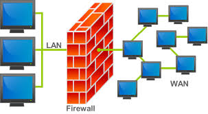

In informatica, nel ambito delle reti di computer, un firewall e' un componente passivo di difesa perimetrale di una rete informatica, che puo' anche svolgere funzioni di collegamento tra due o piu' tronconi di rete, garantendo dunque una protezione in termini di sicurezza informatica della rete stessa.